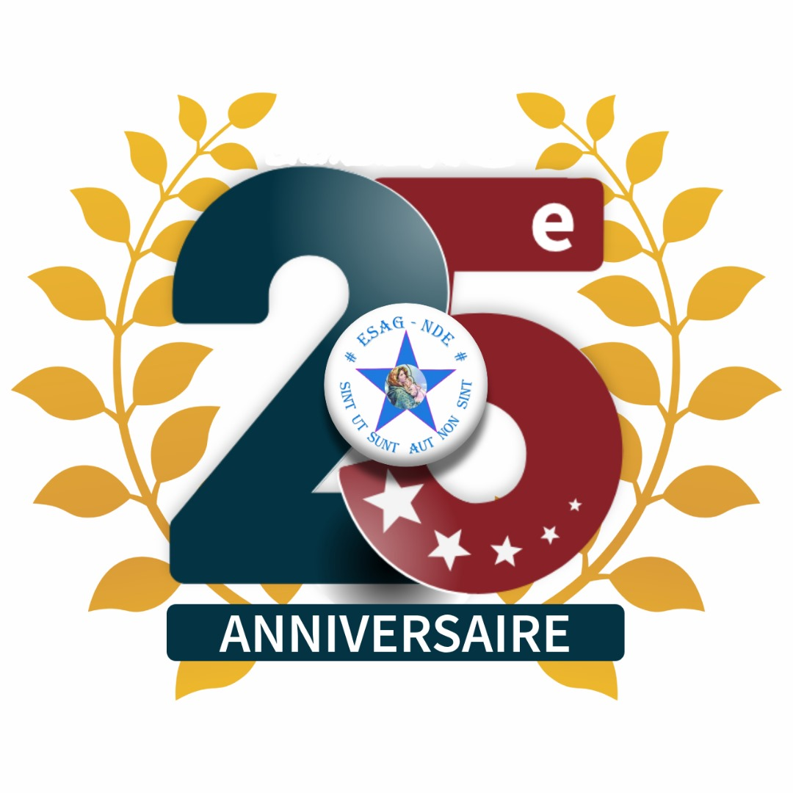

Seul garçon d'une famille de trois enfants, je me nommme Victorien ATSOU. Jeune dynamique et passionnée de l'informaqtique, je m'instruis chaque en lisant des articles sur les résaux sociaux ou encore e suivant les webinaires. De mon temps libre, je me mets à la lecture, écoute de la musiqueet enfin pour me maintenir en bonne santé, je participe à un cours de fitness et de basketball chaque samedi matin
Aujourd'hui l'informatique est un métier d'avenir
Je suis un Frontend developper et aussi un backend developper
Ma force et mon courage est dans le travail continu car le génie est fait du travail
Rien n'est possible sans le Sacrifice dans la perséverance et la détermination
Pour être le meilleur il faut avoir:
les qualités que j'observe ne tant que developeur
Bonjour je me nomme victorien et vous invite à visiter le site de mon école en cliquant sur
Site web de l'ESAG-NDE
Voulez-vous faire une recherche rapide sur le net? Cliquez surRecherche sur le net
La liste de nos produits en développement est sur la page des produits
Pour nous contactez, notez nos adresses sur la page des contacts
Retour a la pageacceuil
Obtenir nos concats à la pageadresses
Vous pouvez nous écrire directementvic
Voici nos dispositifs de travail
Je suis un homme qualifié entant que webmaster j'aime mon travail et je me montre à la hauteur
Cette année mon école fête ses 25 ans, voici le logo des 25 ans 